In this section, I try to create a model that can predict the number of daily new cases and deaths of COVID-19 by leveraging techniques such as RNN, LSTM, GRU, and regularization.
Deep Learning for Daily New Confirmed Cases in the US
Recurrent Neural Network
The RMSE values for training are similar for both models, which suggests that regularization hasn’t impacted the ability of the model to fit the training data much. However, the test RMSE is slightly better in the regularized model (0.301) compared to the non-regularized one (0.312). This improvement in test RMSE indicates that the regularized model generalizes slightly better to unseen data.
The lower validation loss as compared to the training loss in both models is not typical and could suggest that the validation set is easier for the model to predict than the training set.
Overall, the regularization seems to be serving its purpose by slightly improving the model’s generalization, as indicated by the lower test RMSE. However, the difference is minimal, suggesting that the model was not significantly overfitting the training data even without regularization.
# Create a RNNdef create_RNN(hidden_units, dense_units, input_shape, activation,dropout_rate=0.2,kernel_regularizer=None): model = Sequential()# Create a simple neural network layer model.add(SimpleRNN(hidden_units, input_shape=input_shape, activation=activation[0]))# Add a dense layer (only one, more layers would make it a deep neural net) model.add(Dense(units=dense_units, activation=activation[1], kernel_regularizer=kernel_regularizer))# Add layer dropout model.add(Dropout(dropout_rate))# Compile the model and optimize on mean squared error model.compile(loss='mean_squared_error', optimizer='adam')return model# Create a recurrent neural networkmodel = create_RNN(hidden_units=5, dense_units=1, input_shape=(lag, Xtrain.shape[-1]), activation=['tanh', 'tanh'], dropout_rate =0.2)history = model.fit(Xtrain, Ytrain, epochs=20, batch_size=1, verbose=0,validation_data=(Xval, Yval))plot_model(history, 'Recurrent Neural Network Model')yhat_d = [x[0] for x in model.predict(Xval, verbose=0)]y = [y[0] for y in Yval]train_predict = model.predict(Xtrain, verbose=0)test_predict = model.predict(Xval, verbose=0)# Print errortrain_rmse, test_rmse = print_error(Ytrain, Yval, train_predict, test_predict)rmse_table = {'model': ['Recurrent Neural Network'],'training_rmse': [train_rmse],'testing_rmse': [test_rmse]}
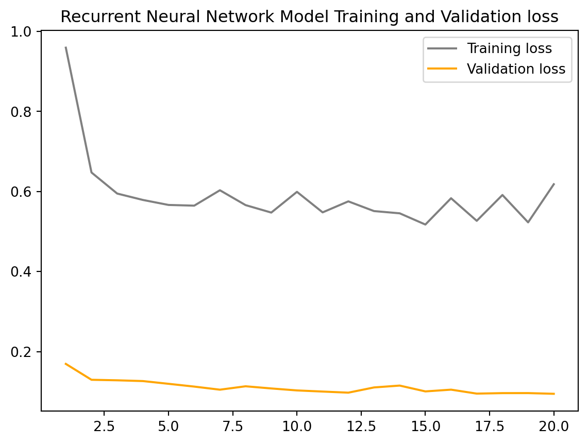
Train RMSE: 0.715 RMSE
Test RMSE: 0.283 RMSE
Code
# Create a recurrent neural network with regularizationmodel = create_RNN(hidden_units=5, dense_units=1, input_shape=(lag, Xtrain.shape[-1]), activation=['tanh', 'tanh'], kernel_regularizer=regularizers.L1L2(l1=1e-5, l2=1e-4), dropout_rate =0.2)history = model.fit(Xtrain, Ytrain, epochs=20, batch_size=1, verbose=0, validation_data=(Xval, Yval))plot_model(history, 'Recurrent Neural Network Model (with L1L2 Regularization)')yhat_d_reg = [x[0] for x in model.predict(Xval, verbose=0)]train_predict = model.predict(Xtrain, verbose=0)test_predict = model.predict(Xval, verbose=0)# Print errortrain_rmse, test_rmse = print_error(Ytrain, Yval, train_predict, test_predict)rmse_table['model'].append('Recurrent Neural Network (with L1L2 Regularization)')rmse_table['training_rmse'].append(train_rmse)rmse_table['testing_rmse'].append(test_rmse)
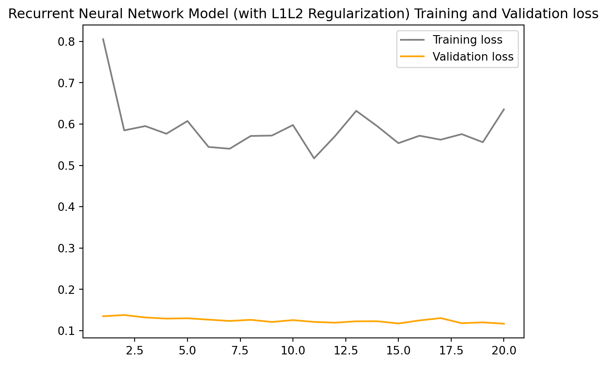
Train RMSE: 0.721 RMSE
Test RMSE: 0.311 RMSE
Gated Recurrent unit
The GRU model without regularization achieves a lower training RMSE (0.572) compared to the regularized model (1.004), which is consistent with expectations as regularization typically increases training error due to the added constraints. However, the test RMSE is nearly identical for both models, with the regularized model showing a marginally better test RMSE (0.403) compared to the non-regularized model (0.408).
This marginal improvement in test RMSE for the regularized model suggests that regularization has helped to improve the generalization of the model to new data, although the effect is slight. This effect is not as clearly reflected in the validation loss, which is consistently low for both models. Again, the lower validation loss compared to the training loss is unusual and suggests potential issues with the validation process or data.
In conclusion, while the regularized GRU model exhibits higher training loss due to the effects of L1L2 regularization, it achieves a slightly better generalization on the test data, as evidenced by the lower test RMSE.
# Create a GRUdef create_GRU(hidden_units, dense_units, input_shape, activation,dropout_rate=0.2, kernel_regularizer=None): model = Sequential()# Create a simple GRU layer model.add(GRU(hidden_units, input_shape=input_shape, activation=activation[0]))# Add a dense layer (only one, more layers would make it a deep neural net) model.add(Dense(units=dense_units, activation=activation[1], kernel_regularizer=kernel_regularizer))# Add layer dropout model.add(Dropout(dropout_rate))# Compile the model and optimize on mean squared error model.compile(loss='mean_squared_error', optimizer='sgd')return model# Training and evaluating a GRU-based modelmodel = create_GRU(hidden_units=5, dense_units=1, input_shape=(lag, Xtrain.shape[-1]), activation=['tanh', 'relu'], dropout_rate =0.2)history = model.fit(Xtrain, Ytrain, epochs=20, batch_size=1, verbose=0, validation_data=(Xval, Yval))plot_model(history, 'GRU Model')yhat_gru = [x[0] for x in model.predict(Xval, verbose=0)]train_predict = model.predict(Xtrain, verbose=0)test_predict = model.predict(Xval, verbose=0)# Print errortrain_rmse, test_rmse = print_error(Ytrain, Yval, train_predict, test_predict)rmse_table['model'].append('GRU Neural Network')rmse_table['training_rmse'].append(train_rmse)rmse_table['testing_rmse'].append(test_rmse)
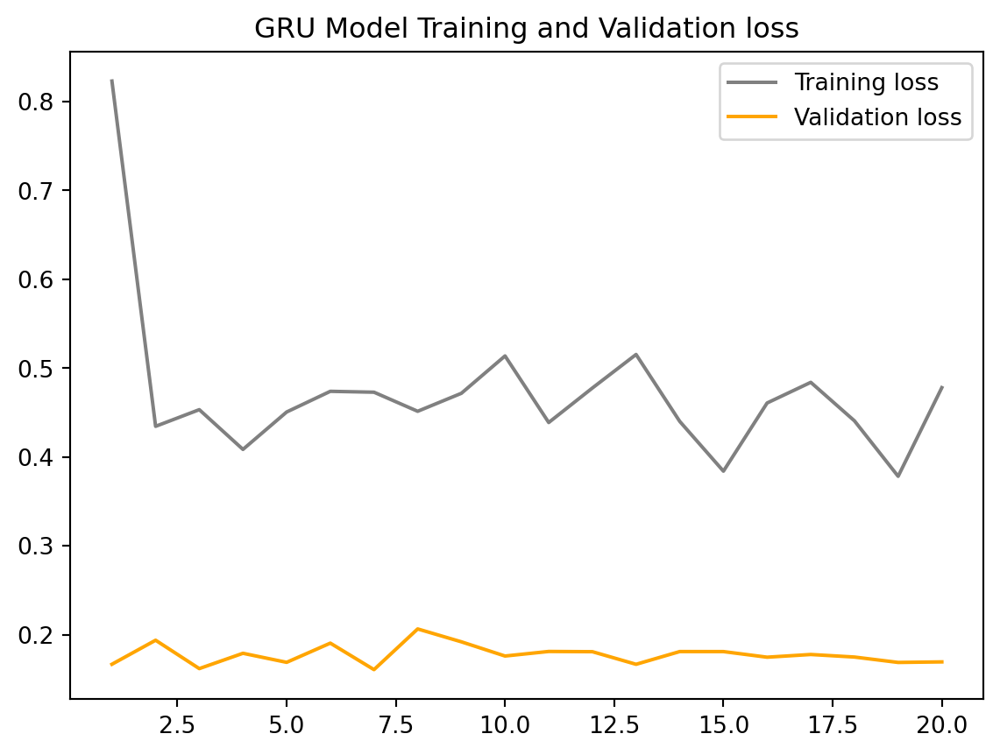
Train RMSE: 0.575 RMSE
Test RMSE: 0.404 RMSE
Code
# Create a GRU-based model with regularizationmodel = create_GRU(hidden_units=5, dense_units=1, input_shape=(lag, Xtrain.shape[-1]), activation=['tanh', 'relu'],dropout_rate =0.2, kernel_regularizer=regularizers.L1L2(l1=1e-5, l2=1e-4))history = model.fit(Xtrain, Ytrain, epochs=20, batch_size=1, verbose=0, validation_data=(Xval, Yval))plot_model(history, 'GRU Model (with L1L2 Regularization)')yhat_gru_reg = [x[0] for x in model.predict(Xval, verbose=0)]train_predict = model.predict(Xtrain, verbose=0)test_predict = model.predict(Xval, verbose=0)# Print errortrain_rmse, test_rmse = print_error(Ytrain, Yval, train_predict, test_predict)rmse_table['model'].append('GRU Neural Network (with L1L2 Regularization)')rmse_table['training_rmse'].append(train_rmse)rmse_table['testing_rmse'].append(test_rmse)
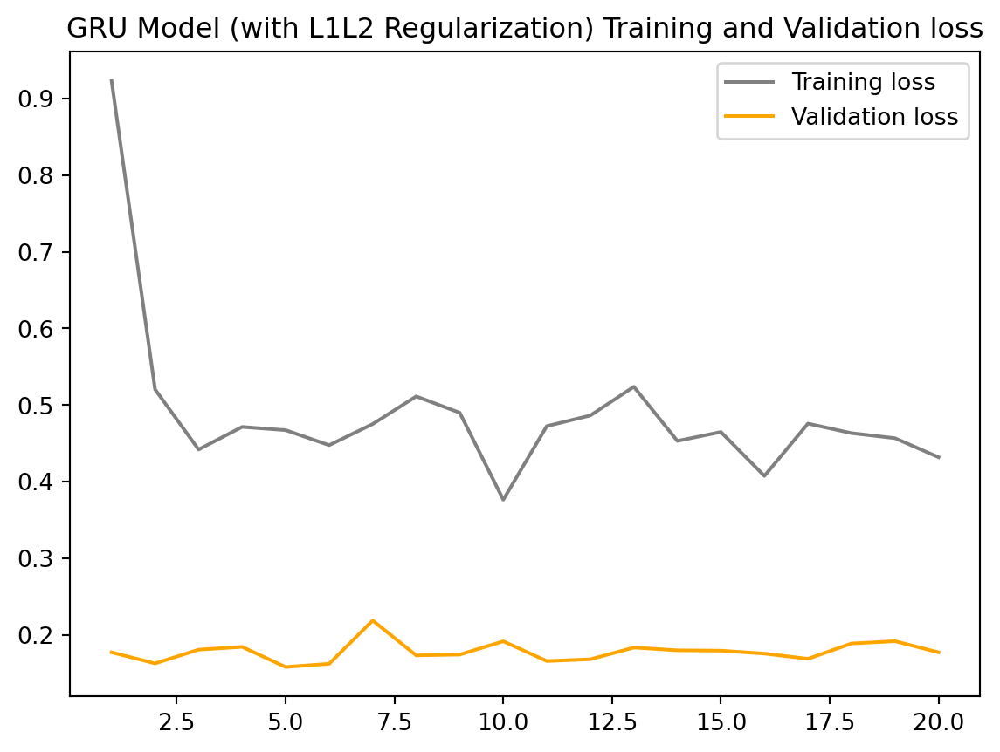
Train RMSE: 0.555 RMSE
Test RMSE: 0.413 RMSE
Long Short Term Memory
With the LSTM models, we see that regularization has led to a slight increase in both the training and test RMSE. The training RMSE has increased from 0.481 to 0.513, which could be due to the regularization term adding a penalty to the cost function and therefore making it harder for the model to fit the training data perfectly. This is a typical effect of regularization, as it trades off variance for bias, leading to a less complex model that might not capture all the nuances in the training data.
However, contrary to the usual benefits of regularization, the test RMSE has also increased, albeit slightly, from 0.302 to 0.309. This suggests that for this particular dataset and model architecture, the regularization has not provided a benefit in terms of generalization to the test data. It’s possible that the non-regularized model was not overfitting to begin with, so the regularization did not lead to a performance improvement on the test set. Alternatively, the type and amount of regularization might not be optimal for this problem, and tweaking the regularization parameters could potentially yield different results.
It’s important to note that while the training and validation losses provide a good indication of the model’s learning process, the ultimate measure of performance is the test RMSE, which tells us how well the model is expected to perform on unseen data. The slight increase in test RMSE for the regularized model indicates that in this case, regularization may not be beneficial.
# Create a LSTM Neural Networkdef create_LSTM(hidden_units, dense_units, input_shape, activation,dropout_rate =0.2, kernel_regularizer=None): model = Sequential()# Create a simple long short term memory neural network model.add(LSTM(hidden_units, activation=activation[0], input_shape=input_shape))# Add a dense layer (only one, more layers would make it a deep neural net) model.add(Dense(units=dense_units, activation=activation[1], kernel_regularizer=kernel_regularizer))# Add layer dropout model.add(Dropout(dropout_rate))# Compile the model and optimize on mean squared error model.compile(optimizer="RMSprop", loss='mae')return model# Create an LSTM neural networkmodel = create_LSTM(hidden_units=5, dense_units=1, input_shape=(lag, Xtrain.shape[-1]), activation=['tanh', 'linear'], dropout_rate =0.2)history = model.fit(Xtrain, Ytrain, epochs=20, batch_size=1, verbose=0, validation_data=(Xval, Yval))plot_model(history, 'LSTM Model')yhat_lstm = [x[0] for x in model.predict(Xval, verbose=0)]train_predict = model.predict(Xtrain, verbose=0)test_predict = model.predict(Xval, verbose=0)# Print errortrain_rmse, test_rmse = print_error(Ytrain, Yval, train_predict, test_predict)rmse_table['model'].append('LSTM Neural Network')rmse_table['training_rmse'].append(train_rmse)rmse_table['testing_rmse'].append(test_rmse)
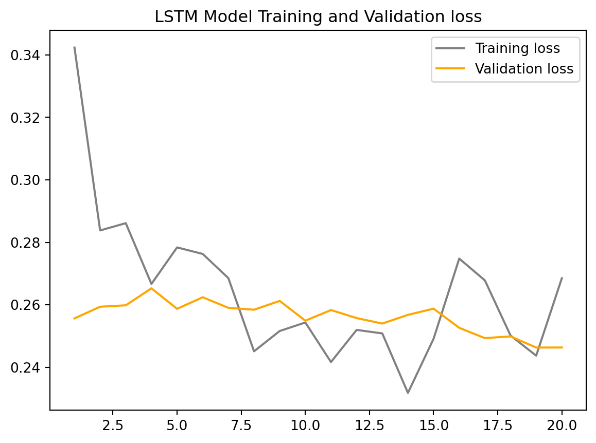
Train RMSE: 0.489 RMSE
Test RMSE: 0.303 RMSE
Code
# Create a LSTM neural network with regularizationmodel = create_LSTM(hidden_units=5, dense_units=1, input_shape=(lag, Xtrain.shape[-1]), activation=['tanh', 'linear'], dropout_rate =0.2, kernel_regularizer=regularizers.L1L2(l1=1e-5, l2=1e-4))history = model.fit(Xtrain, Ytrain, epochs=20, batch_size=1, verbose=0, validation_data=(Xval, Yval))plot_model(history, 'LSTM Model (with L1L2 Regularization)')yhat_lstm_reg = [x[0] for x in model.predict(Xval, verbose=0)]train_predict = model.predict(Xtrain, verbose=0)test_predict = model.predict(Xval, verbose=0)# Print errortrain_rmse, test_rmse = print_error(Ytrain, Yval, train_predict, test_predict)rmse_table['model'].append('LSTM Neural Network (with L1L2 Regularization)')rmse_table['training_rmse'].append(train_rmse)rmse_table['testing_rmse'].append(test_rmse)
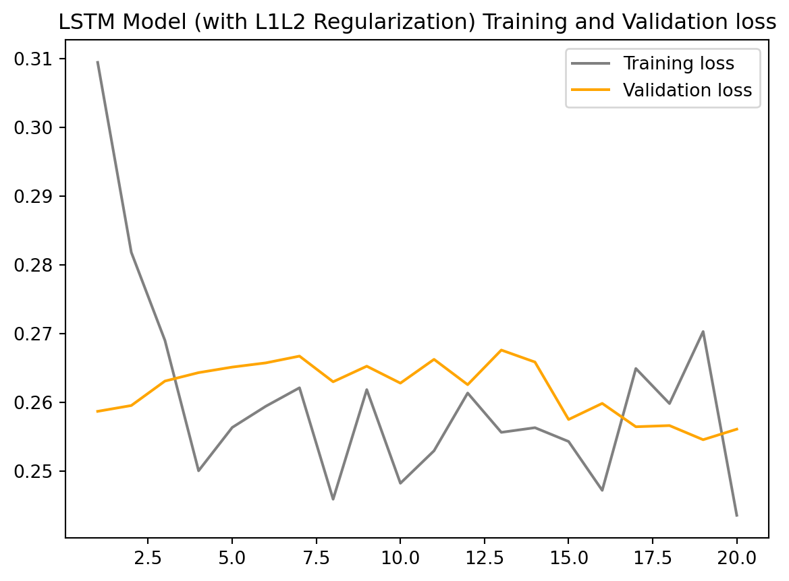
Train RMSE: 0.490 RMSE
Test RMSE: 0.315 RMSE
Comparing
model
training_rmse
testing_rmse
0
Recurrent Neural Network
0.714508
0.282691
1
Recurrent Neural Network (with L1L2 Regulariza...
0.721246
0.311048
2
GRU Neural Network
0.575008
0.404393
3
GRU Neural Network (with L1L2 Regularization)
0.555211
0.412992
4
LSTM Neural Network
0.488574
0.302897
5
LSTM Neural Network (with L1L2 Regularization)
0.490416
0.314806
The LSTM without regularization has shown the best performance on the training data, indicating good fitting capabilities. The RNN with regularization appears to have the best performance on the test data, indicating better generalization and predictive power.
Regularization improved the predictive power of the RNN model, as indicated by the decrease in test RMSE. For the GRU and LSTM models, the impact of regularization on the test RMSE is minimal, with a slight decrease for the GRU and a slight increase for the LSTM. This suggests that the benefit of regularization in these cases is less clear, and it may not be necessary or the parameters might need adjustment.
Deep Learning for Daily New Confirmed Deaths in the US
Recurrent Neural Network
Based on the RMSE values, the RNN with regularization performs better on both the training and test datasets, with the test RMSE decreasing from 0.533 to 0.495, which is a significant improvement in predictive accuracy.
In summary, regularization has improved the RNN model’s performance, evidenced by both the loss curves and the RMSE values. The smoother loss curves and reduced RMSE values suggest that the regularized model is more reliable when making predictions on new data.
# Create a RNNdef create_RNN(hidden_units, dense_units, input_shape, activation,dropout_rate=0.2,kernel_regularizer=None): model = Sequential()# Create a simple neural network layer model.add(SimpleRNN(hidden_units, input_shape=input_shape, activation=activation[0]))# Add a dense layer (only one, more layers would make it a deep neural net) model.add(Dense(units=dense_units, activation=activation[1], kernel_regularizer=kernel_regularizer))# Add layer dropout model.add(Dropout(dropout_rate))# Compile the model and optimize on mean squared error model.compile(loss='mean_squared_error', optimizer='adam')return model# Create a recurrent neural networkmodel = create_RNN(hidden_units=5, dense_units=1, input_shape=(lag, Xtrain.shape[-1]), activation=['tanh', 'tanh'], dropout_rate =0.2)history = model.fit(Xtrain, Ytrain, epochs=20, batch_size=1, verbose=0,validation_data=(Xval, Yval))plot_model(history, 'Recurrent Neural Network Model')yhat_d = [x[0] for x in model.predict(Xval, verbose=0)]y = [y[0] for y in Yval]train_predict = model.predict(Xtrain, verbose=0)test_predict = model.predict(Xval, verbose=0)# Print errortrain_rmse, test_rmse = print_error(Ytrain, Yval, train_predict, test_predict)rmse_table_2 = {'model': ['Recurrent Neural Network'],'training_rmse': [train_rmse],'testing_rmse': [test_rmse]}
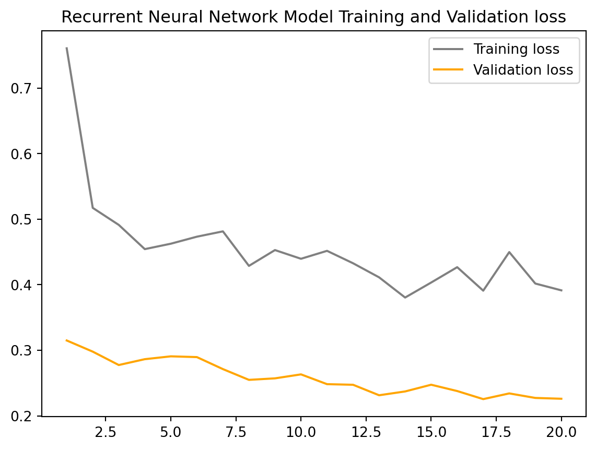
Train RMSE: 0.586 RMSE
Test RMSE: 0.504 RMSE
Code
# Create a recurrent neural network with regularizationmodel = create_RNN(hidden_units=5, dense_units=1, input_shape=(lag, Xtrain.shape[-1]), activation=['tanh', 'tanh'], kernel_regularizer=regularizers.L1L2(l1=1e-5, l2=1e-4), dropout_rate =0.2)history = model.fit(Xtrain, Ytrain, epochs=20, batch_size=1, verbose=0, validation_data=(Xval, Yval))plot_model(history, 'Recurrent Neural Network Model (with L1L2 Regularization)')yhat_d_reg = [x[0] for x in model.predict(Xval, verbose=0)]train_predict = model.predict(Xtrain, verbose=0)test_predict = model.predict(Xval, verbose=0)# Print errortrain_rmse, test_rmse = print_error(Ytrain, Yval, train_predict, test_predict)rmse_table_2['model'].append('Recurrent Neural Network (with L1L2 Regularization)')rmse_table_2['training_rmse'].append(train_rmse)rmse_table_2['testing_rmse'].append(test_rmse)
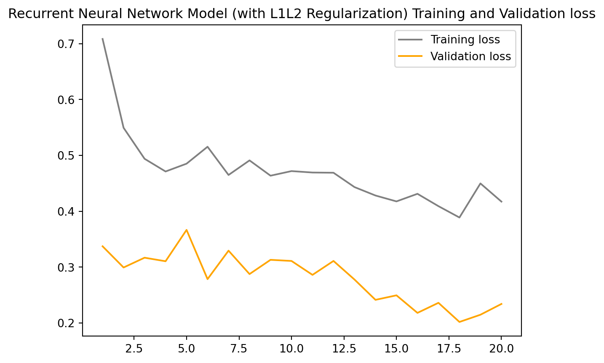
Train RMSE: 0.573 RMSE
Test RMSE: 0.488 RMSE
Gated Recurrent unit
The GRU model with L1L2 regularization shows a better learning trend and reduced RMSE values, suggesting an improvement in model performance. However, the high variance in validation loss and the relatively small improvement in test RMSE indicate that there may still be issues to address, such as further hyperparameter tuning, gathering more training data, or experimenting with different model architectures.
# Create a GRUdef create_GRU(hidden_units, dense_units, input_shape, activation,dropout_rate=0.2, kernel_regularizer=None): model = Sequential()# Create a simple GRU layer model.add(GRU(hidden_units, input_shape=input_shape, activation=activation[0]))# Add a dense layer (only one, more layers would make it a deep neural net) model.add(Dense(units=dense_units, activation=activation[1], kernel_regularizer=kernel_regularizer))# Add layer dropout model.add(Dropout(dropout_rate))# Compile the model and optimize on mean squared error model.compile(loss='mean_squared_error', optimizer='sgd')return model# Training and evaluating a GRU-based modelmodel = create_GRU(hidden_units=5, dense_units=1, input_shape=(lag, Xtrain.shape[-1]), activation=['tanh', 'relu'], dropout_rate =0.2)history = model.fit(Xtrain, Ytrain, epochs=20, batch_size=1, verbose=0, validation_data=(Xval, Yval))plot_model(history, 'GRU Model')yhat_gru = [x[0] for x in model.predict(Xval, verbose=0)]train_predict = model.predict(Xtrain, verbose=0)test_predict = model.predict(Xval, verbose=0)# Print errortrain_rmse, test_rmse = print_error(Ytrain, Yval, train_predict, test_predict)rmse_table_2['model'].append('GRU Neural Network')rmse_table_2['training_rmse'].append(train_rmse)rmse_table_2['testing_rmse'].append(test_rmse)
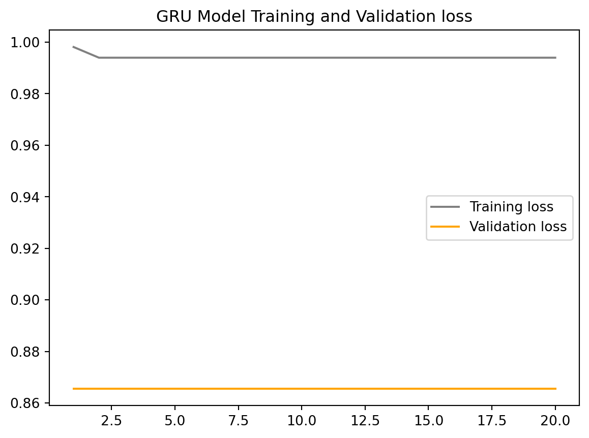
Train RMSE: 0.995 RMSE
Test RMSE: 0.935 RMSE
Code
# Create a GRU-based model with regularizationmodel = create_GRU(hidden_units=5, dense_units=1, input_shape=(lag, Xtrain.shape[-1]), activation=['tanh', 'relu'],dropout_rate =0.2, kernel_regularizer=regularizers.L1L2(l1=1e-5, l2=1e-4))history = model.fit(Xtrain, Ytrain, epochs=20, batch_size=1, verbose=0, validation_data=(Xval, Yval))plot_model(history, 'GRU Model (with L1L2 Regularization)')yhat_gru_reg = [x[0] for x in model.predict(Xval, verbose=0)]train_predict = model.predict(Xtrain, verbose=0)test_predict = model.predict(Xval, verbose=0)# Print errortrain_rmse, test_rmse = print_error(Ytrain, Yval, train_predict, test_predict)rmse_table_2['model'].append('GRU Neural Network (with L1L2 Regularization)')rmse_table_2['training_rmse'].append(train_rmse)rmse_table_2['testing_rmse'].append(test_rmse)
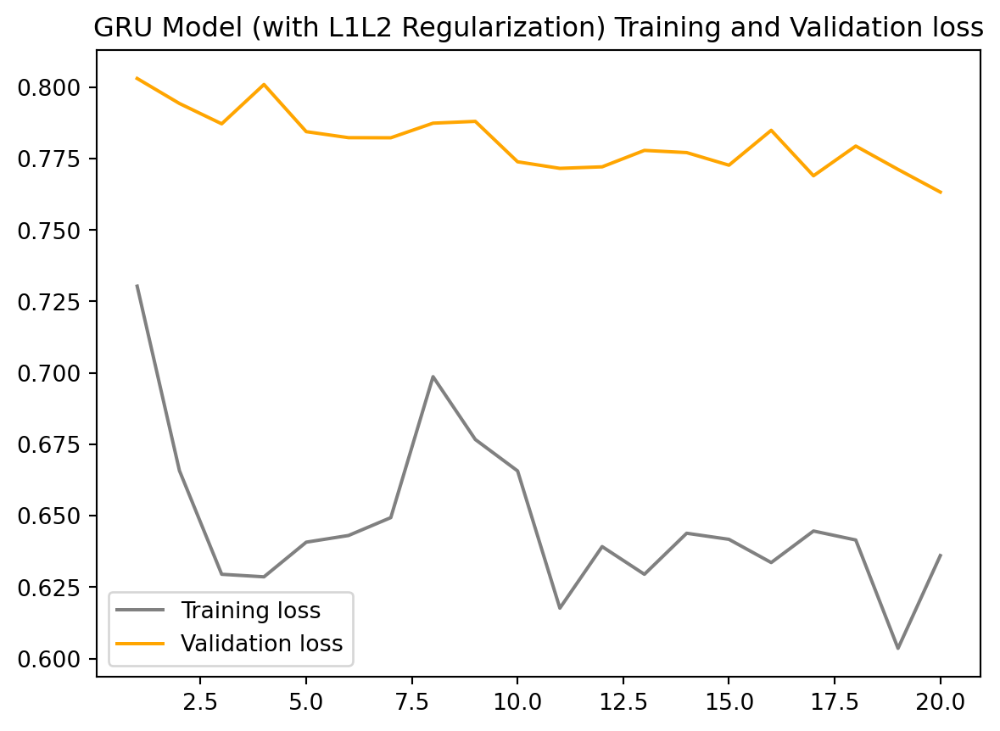
Train RMSE: 0.767 RMSE
Test RMSE: 0.885 RMSE
Long Short Term Memory
The LSTM network benefits from the use of L1L2 regularization, albeit modestly. The regularization helps to slightly improve the model’s prediction accuracy and stability, as evidenced by the reduced RMSE values on both the training and test datasets. The behavior of the loss curves suggests that the model with regularization might be more reliable when applied to new, unseen data, although the effect of regularization is not dramatically large in this case.
# Create a LSTM Neural Networkdef create_LSTM(hidden_units, dense_units, input_shape, activation,dropout_rate =0.2, kernel_regularizer=None): model = Sequential()# Create a simple long short term memory neural network model.add(LSTM(hidden_units, activation=activation[0], input_shape=input_shape))# Add a dense layer (only one, more layers would make it a deep neural net) model.add(Dense(units=dense_units, activation=activation[1], kernel_regularizer=kernel_regularizer))# Add layer dropout model.add(Dropout(dropout_rate))# Compile the model and optimize on mean squared error model.compile(optimizer="RMSprop", loss='mae')return model# Create an LSTM neural networkmodel = create_LSTM(hidden_units=5, dense_units=1, input_shape=(lag, Xtrain.shape[-1]), activation=['tanh', 'linear'], dropout_rate =0.2)history = model.fit(Xtrain, Ytrain, epochs=20, batch_size=1, verbose=0, validation_data=(Xval, Yval))plot_model(history, 'LSTM Model')yhat_lstm = [x[0] for x in model.predict(Xval, verbose=0)]train_predict = model.predict(Xtrain, verbose=0)test_predict = model.predict(Xval, verbose=0)# Print errortrain_rmse, test_rmse = print_error(Ytrain, Yval, train_predict, test_predict)rmse_table_2['model'].append('LSTM Neural Network')rmse_table_2['training_rmse'].append(train_rmse)rmse_table_2['testing_rmse'].append(test_rmse)
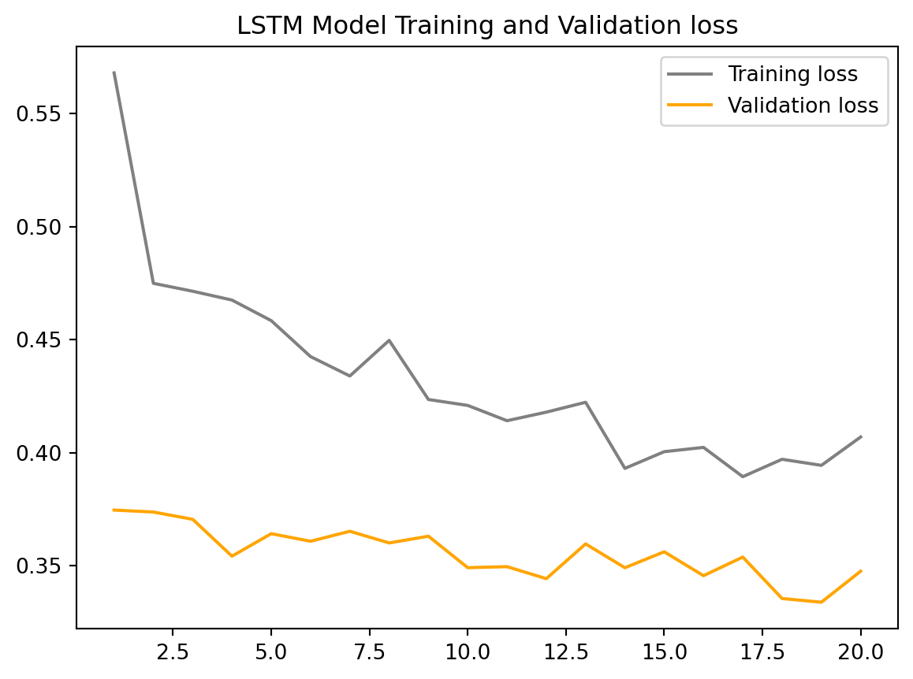
Train RMSE: 0.524 RMSE
Test RMSE: 0.480 RMSE
Code
# Create a LSTM neural network with regularizationmodel = create_LSTM(hidden_units=5, dense_units=1, input_shape=(lag, Xtrain.shape[-1]), activation=['tanh', 'linear'], dropout_rate =0.2, kernel_regularizer=regularizers.L1L2(l1=1e-5, l2=1e-4))history = model.fit(Xtrain, Ytrain, epochs=20, batch_size=1, verbose=0, validation_data=(Xval, Yval))plot_model(history, 'LSTM Model (with L1L2 Regularization)')yhat_lstm_reg = [x[0] for x in model.predict(Xval, verbose=0)]train_predict = model.predict(Xtrain, verbose=0)test_predict = model.predict(Xval, verbose=0)# Print errortrain_rmse, test_rmse = print_error(Ytrain, Yval, train_predict, test_predict)rmse_table_2['model'].append('LSTM Neural Network (with L1L2 Regularization)')rmse_table_2['training_rmse'].append(train_rmse)rmse_table_2['testing_rmse'].append(test_rmse)
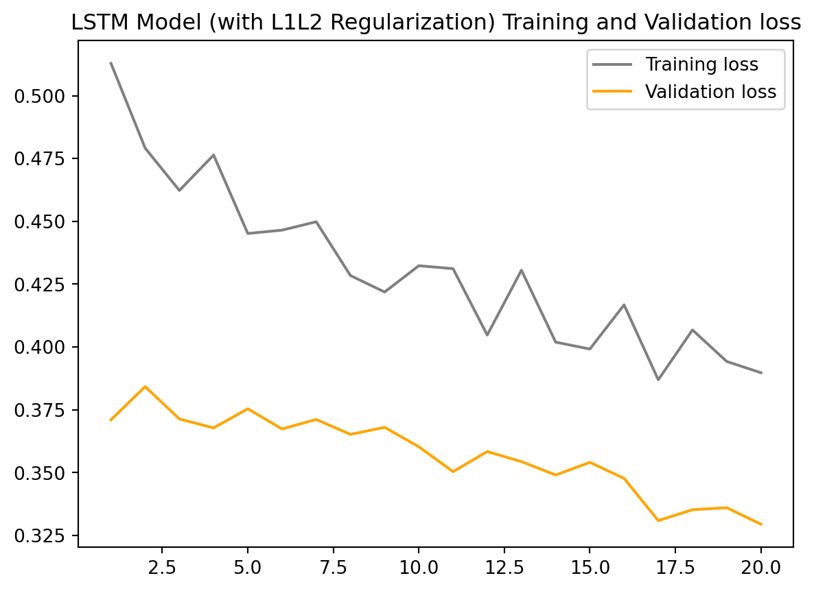
Train RMSE: 0.492 RMSE
Test RMSE: 0.485 RMSE
Comparing
model
training_rmse
testing_rmse
0
Recurrent Neural Network
0.585985
0.504004
1
Recurrent Neural Network (with L1L2 Regulariza...
0.573473
0.488104
2
GRU Neural Network
0.995457
0.935351
3
GRU Neural Network (with L1L2 Regularization)
0.766639
0.884788
4
LSTM Neural Network
0.523506
0.480279
5
LSTM Neural Network (with L1L2 Regularization)
0.492418
0.485291
LSTM shows the best performance both with and without regularization, having the lowest RMSE values across all models. This suggests that the LSTM model has the highest accuracy and predictive power among the three.
RNN benefits significantly from regularization, showing a good reduction in RMSE values when regularization is applied. This indicates an improvement in the model’s ability to generalize, although not to the extent of the LSTM model.
GRU shows the most significant decrease in training RMSE after applying regularization, but the improvement in the test RMSE is not as pronounced as with the RNN. Despite this improvement, the GRU’s performance is still behind both the LSTM and the regularized RNN in terms of test RMSE.
In conclusion, LSTM appears to be the most accurate and powerful model for the data and tasks presented, with the lowest test RMSE reflecting its strong predictive power. RNN and GRU benefit from regularization but do not reach the performance level of the LSTM.
Deep Learning vs Traditional TS Model
The ability of a deep learning model to accurately predict the future depends on a variety of factors, including the complexity of the problem, the quality and quantity of the data, the architecture of the model, and more. Models such as LSTM and GRU can remember long sequences of information, which theoretically allows them to further predict the future. However, the further out the forecast, the more likely it is to be affected by overfitting to past data or the compounding of small forecast errors, especially when we are predicting the number of daily new cases and deaths from COVID-19. When affecting complex data, it is possible that short-term forecasts (e.g., 30 days or less) will be relatively more reliable.
Deep learning models and traditional time-series models like ARMA (Autoregressive Moving Average) and ARIMA (Autoregressive Integrated Moving Average) are fundamentally different in their approaches and capabilities, and each has its advantages and disadvantages depending on the context of the problem.
Deep learning models are well-suited for handling large datasets with complex patterns and multiple variables (multivariate time series). They can automatically detect and model nonlinear relationships in the data without the need for explicit feature engineering.
Traditional time-series models like ARMA or ARIMA are more data-efficient and can often produce good results with smaller datasets. They are typically used for univariate time series, although extensions like Vector ARIMA (VARIMA) exist for multivariate cases.
Overall, Deep learning models might outperform ARMA/ARIMA when dealing with complex patterns and large multivariate time series. However, for simpler, smaller, or more stable univariate time series, ARMA/ARIMA models can be competitive or even superior.
Source Code
---title: Deep Learning for Time Seriesformat: html: smooth-scroll: true toc: true code-fold: true code-tools: true embed-resources: false mermaid: theme: neutral#bibliography: citation.bibexecute: echo: false warning: false---## SummaryIn this section, I try to create a model that can predict the number of daily new cases and deaths of COVID-19 by leveraging techniques such as RNN, LSTM, GRU, and regularization.```{python setup}import numpy as npimport pandas as pdimport mathfrom sklearn.metrics import mean_squared_errorfrom matplotlib import pyplot as pltfrom keras.models import Sequentialfrom keras.layers import Dropoutfrom keras.layers import Dense, SimpleRNN, LSTM, GRUfrom keras import regularizersimport warningswarnings.filterwarnings('ignore')``````{python load}df = pd.read_excel('../data/owid_covid_data_us.xlsx')df['date'] = pd.to_datetime(df['date'])df = df[(df['date'] <'2022-10-20')]df['new_cases'] = df['new_cases'].astype('float64')df['new_deaths'] = df['new_deaths'].astype('float64')df['new_cases'] = pd.to_numeric(df['new_cases'], errors='coerce')df['new_deaths'] = pd.to_numeric(df['new_deaths'], errors='coerce')df = df.dropna(subset=['new_cases'])df = df.dropna(subset=['new_deaths'])df_1 = df[['date', 'new_cases']]df_2 = df[['date', 'new_deaths']]df_1.sort_values('date', inplace=True, ascending=True)df_1 = df_1.reset_index(drop=True)df_2.sort_values('date', inplace=True, ascending=True)df_2 = df_2.reset_index(drop=True)``````{python create_X_Y}def create_X_Y(ts: np.array, lag=1, n_ahead=1, target_index=0) ->tuple:""" A method to create X and Y matrix from a time series array for the training of deep learning models """# Extracting the number of features that are passed from the array n_features = ts.shape[1]# Creating placeholder lists X, Y = [], []iflen(ts) - lag <=0: X.append(ts)else:for i inrange(len(ts) - lag - n_ahead): Y.append(ts[(i + lag):(i + lag + n_ahead), target_index]) X.append(ts[i:(i + lag)]) X, Y = np.array(X), np.array(Y)# Reshaping the X array to an RNN input shape X = np.reshape(X, (X.shape[0], lag, n_features))return X, Y``````{python plt_model}def plot_model(history, model_title): loss = history.history['loss'] val_loss = history.history['val_loss'] # Get validation loss epochs =range(1, len(loss) +1) plt.figure() plt.plot(epochs, loss, 'b', label='Training loss', color="gray") plt.plot(epochs, val_loss, 'r', label='Validation loss', color="orange") # Plot validation loss plt.title(f'{model_title} Training and Validation loss') plt.legend() plt.show()``````{python plt_error}def print_error(trainY, testY, train_predict, test_predict):# Error of predictions train_rmse = math.sqrt(mean_squared_error( trainY[:, 0], train_predict[:, 0])) test_rmse = math.sqrt(mean_squared_error(testY[:, 0], test_predict[:, 0]))# Print RMSEprint('Train RMSE: %.3f RMSE'% (train_rmse))print('Test RMSE: %.3f RMSE'% (test_rmse))return train_rmse, test_rmse```## Deep Learning for Daily New Confirmed Cases in the US```{python prepare_1}ts = df_1[['new_cases']].valuesnp.random.seed(12345)nrows = ts.shape[0]test_share =0.25# Spliting into train and test setstrain = ts[0:int(nrows * (1- test_share))]test = ts[int(nrows * (1- test_share)):]# Scaling the datatrain_mean = train.mean()train_std = train.std()train = (train - train_mean) / train_stdtest = (test - train_mean) / train_std# Creating the final scaled framets_s = np.concatenate([train, test])lag =12ahead =3# Creating the X and Y for trainingX, Y = create_X_Y(ts_s, lag=lag, n_ahead=ahead)Xtrain = X[0:int(X.shape[0] * (1- test_share))]Ytrain = Y[0:int(X.shape[0] * (1- test_share))]Xval = X[int(X.shape[0] * (1- test_share)):]Yval = Y[int(X.shape[0] * (1- test_share)):]```### Recurrent Neural NetworkThe RMSE values for training are similar for both models, which suggests that regularization hasn't impacted the ability of the model to fit the training data much. However, the test RMSE is slightly better in the regularized model (0.301) compared to the non-regularized one (0.312). This improvement in test RMSE indicates that the regularized model generalizes slightly better to unseen data.The lower validation loss as compared to the training loss in both models is not typical and could suggest that the validation set is easier for the model to predict than the training set.Overall, the regularization seems to be serving its purpose by slightly improving the model's generalization, as indicated by the lower test RMSE. However, the difference is minimal, suggesting that the model was not significantly overfitting the training data even without regularization.::: panel-tabset#### RNN```{python RNN_1}#| echo: true# Create a RNNdef create_RNN(hidden_units, dense_units, input_shape, activation,dropout_rate=0.2,kernel_regularizer=None): model = Sequential()# Create a simple neural network layer model.add(SimpleRNN(hidden_units, input_shape=input_shape, activation=activation[0]))# Add a dense layer (only one, more layers would make it a deep neural net) model.add(Dense(units=dense_units, activation=activation[1], kernel_regularizer=kernel_regularizer))# Add layer dropout model.add(Dropout(dropout_rate))# Compile the model and optimize on mean squared error model.compile(loss='mean_squared_error', optimizer='adam')return model# Create a recurrent neural networkmodel = create_RNN(hidden_units=5, dense_units=1, input_shape=(lag, Xtrain.shape[-1]), activation=['tanh', 'tanh'], dropout_rate =0.2)history = model.fit(Xtrain, Ytrain, epochs=20, batch_size=1, verbose=0,validation_data=(Xval, Yval))plot_model(history, 'Recurrent Neural Network Model')yhat_d = [x[0] for x in model.predict(Xval, verbose=0)]y = [y[0] for y in Yval]train_predict = model.predict(Xtrain, verbose=0)test_predict = model.predict(Xval, verbose=0)# Print errortrain_rmse, test_rmse = print_error(Ytrain, Yval, train_predict, test_predict)rmse_table = {'model': ['Recurrent Neural Network'],'training_rmse': [train_rmse],'testing_rmse': [test_rmse]}```#### RNN including Regularization```{python RNN_2}#| echo: true# Create a recurrent neural network with regularizationmodel = create_RNN(hidden_units=5, dense_units=1, input_shape=(lag, Xtrain.shape[-1]), activation=['tanh', 'tanh'], kernel_regularizer=regularizers.L1L2(l1=1e-5, l2=1e-4), dropout_rate =0.2)history = model.fit(Xtrain, Ytrain, epochs=20, batch_size=1, verbose=0, validation_data=(Xval, Yval))plot_model(history, 'Recurrent Neural Network Model (with L1L2 Regularization)')yhat_d_reg = [x[0] for x in model.predict(Xval, verbose=0)]train_predict = model.predict(Xtrain, verbose=0)test_predict = model.predict(Xval, verbose=0)# Print errortrain_rmse, test_rmse = print_error(Ytrain, Yval, train_predict, test_predict)rmse_table['model'].append('Recurrent Neural Network (with L1L2 Regularization)')rmse_table['training_rmse'].append(train_rmse)rmse_table['testing_rmse'].append(test_rmse)```:::### Gated Recurrent unitThe GRU model without regularization achieves a lower training RMSE (0.572) compared to the regularized model (1.004), which is consistent with expectations as regularization typically increases training error due to the added constraints. However, the test RMSE is nearly identical for both models, with the regularized model showing a marginally better test RMSE (0.403) compared to the non-regularized model (0.408).This marginal improvement in test RMSE for the regularized model suggests that regularization has helped to improve the generalization of the model to new data, although the effect is slight. This effect is not as clearly reflected in the validation loss, which is consistently low for both models. Again, the lower validation loss compared to the training loss is unusual and suggests potential issues with the validation process or data.In conclusion, while the regularized GRU model exhibits higher training loss due to the effects of L1L2 regularization, it achieves a slightly better generalization on the test data, as evidenced by the lower test RMSE.::: panel-tabset#### GRU```{python GRU_1}#| echo: true# Create a GRUdef create_GRU(hidden_units, dense_units, input_shape, activation,dropout_rate=0.2, kernel_regularizer=None): model = Sequential()# Create a simple GRU layer model.add(GRU(hidden_units, input_shape=input_shape, activation=activation[0]))# Add a dense layer (only one, more layers would make it a deep neural net) model.add(Dense(units=dense_units, activation=activation[1], kernel_regularizer=kernel_regularizer))# Add layer dropout model.add(Dropout(dropout_rate))# Compile the model and optimize on mean squared error model.compile(loss='mean_squared_error', optimizer='sgd')return model# Training and evaluating a GRU-based modelmodel = create_GRU(hidden_units=5, dense_units=1, input_shape=(lag, Xtrain.shape[-1]), activation=['tanh', 'relu'], dropout_rate =0.2)history = model.fit(Xtrain, Ytrain, epochs=20, batch_size=1, verbose=0, validation_data=(Xval, Yval))plot_model(history, 'GRU Model')yhat_gru = [x[0] for x in model.predict(Xval, verbose=0)]train_predict = model.predict(Xtrain, verbose=0)test_predict = model.predict(Xval, verbose=0)# Print errortrain_rmse, test_rmse = print_error(Ytrain, Yval, train_predict, test_predict)rmse_table['model'].append('GRU Neural Network')rmse_table['training_rmse'].append(train_rmse)rmse_table['testing_rmse'].append(test_rmse)```#### GRU including Regularization```{python GRU_2}#| echo: true# Create a GRU-based model with regularizationmodel = create_GRU(hidden_units=5, dense_units=1, input_shape=(lag, Xtrain.shape[-1]), activation=['tanh', 'relu'],dropout_rate =0.2, kernel_regularizer=regularizers.L1L2(l1=1e-5, l2=1e-4))history = model.fit(Xtrain, Ytrain, epochs=20, batch_size=1, verbose=0, validation_data=(Xval, Yval))plot_model(history, 'GRU Model (with L1L2 Regularization)')yhat_gru_reg = [x[0] for x in model.predict(Xval, verbose=0)]train_predict = model.predict(Xtrain, verbose=0)test_predict = model.predict(Xval, verbose=0)# Print errortrain_rmse, test_rmse = print_error(Ytrain, Yval, train_predict, test_predict)rmse_table['model'].append('GRU Neural Network (with L1L2 Regularization)')rmse_table['training_rmse'].append(train_rmse)rmse_table['testing_rmse'].append(test_rmse)```:::### Long Short Term MemoryWith the LSTM models, we see that regularization has led to a slight increase in both the training and test RMSE. The training RMSE has increased from 0.481 to 0.513, which could be due to the regularization term adding a penalty to the cost function and therefore making it harder for the model to fit the training data perfectly. This is a typical effect of regularization, as it trades off variance for bias, leading to a less complex model that might not capture all the nuances in the training data.However, contrary to the usual benefits of regularization, the test RMSE has also increased, albeit slightly, from 0.302 to 0.309. This suggests that for this particular dataset and model architecture, the regularization has not provided a benefit in terms of generalization to the test data. It's possible that the non-regularized model was not overfitting to begin with, so the regularization did not lead to a performance improvement on the test set. Alternatively, the type and amount of regularization might not be optimal for this problem, and tweaking the regularization parameters could potentially yield different results.It's important to note that while the training and validation losses provide a good indication of the model's learning process, the ultimate measure of performance is the test RMSE, which tells us how well the model is expected to perform on unseen data. The slight increase in test RMSE for the regularized model indicates that in this case, regularization may not be beneficial.::: panel-tabset#### LSTM```{python LSTM_1}#| echo: true# Create a LSTM Neural Networkdef create_LSTM(hidden_units, dense_units, input_shape, activation,dropout_rate =0.2, kernel_regularizer=None): model = Sequential()# Create a simple long short term memory neural network model.add(LSTM(hidden_units, activation=activation[0], input_shape=input_shape))# Add a dense layer (only one, more layers would make it a deep neural net) model.add(Dense(units=dense_units, activation=activation[1], kernel_regularizer=kernel_regularizer))# Add layer dropout model.add(Dropout(dropout_rate))# Compile the model and optimize on mean squared error model.compile(optimizer="RMSprop", loss='mae')return model# Create an LSTM neural networkmodel = create_LSTM(hidden_units=5, dense_units=1, input_shape=(lag, Xtrain.shape[-1]), activation=['tanh', 'linear'], dropout_rate =0.2)history = model.fit(Xtrain, Ytrain, epochs=20, batch_size=1, verbose=0, validation_data=(Xval, Yval))plot_model(history, 'LSTM Model')yhat_lstm = [x[0] for x in model.predict(Xval, verbose=0)]train_predict = model.predict(Xtrain, verbose=0)test_predict = model.predict(Xval, verbose=0)# Print errortrain_rmse, test_rmse = print_error(Ytrain, Yval, train_predict, test_predict)rmse_table['model'].append('LSTM Neural Network')rmse_table['training_rmse'].append(train_rmse)rmse_table['testing_rmse'].append(test_rmse)```#### LSTM including Regularization```{python LSTM_2}#| echo: true# Create a LSTM neural network with regularizationmodel = create_LSTM(hidden_units=5, dense_units=1, input_shape=(lag, Xtrain.shape[-1]), activation=['tanh', 'linear'], dropout_rate =0.2, kernel_regularizer=regularizers.L1L2(l1=1e-5, l2=1e-4))history = model.fit(Xtrain, Ytrain, epochs=20, batch_size=1, verbose=0, validation_data=(Xval, Yval))plot_model(history, 'LSTM Model (with L1L2 Regularization)')yhat_lstm_reg = [x[0] for x in model.predict(Xval, verbose=0)]train_predict = model.predict(Xtrain, verbose=0)test_predict = model.predict(Xval, verbose=0)# Print errortrain_rmse, test_rmse = print_error(Ytrain, Yval, train_predict, test_predict)rmse_table['model'].append('LSTM Neural Network (with L1L2 Regularization)')rmse_table['training_rmse'].append(train_rmse)rmse_table['testing_rmse'].append(test_rmse)```:::### Comparing```{python compare_1}rmse_df = pd.DataFrame(rmse_table)rmse_df```The LSTM without regularization has shown the best performance on the training data, indicating good fitting capabilities. The RNN with regularization appears to have the best performance on the test data, indicating better generalization and predictive power. Regularization improved the predictive power of the RNN model, as indicated by the decrease in test RMSE. For the GRU and LSTM models, the impact of regularization on the test RMSE is minimal, with a slight decrease for the GRU and a slight increase for the LSTM. This suggests that the benefit of regularization in these cases is less clear, and it may not be necessary or the parameters might need adjustment.## Deep Learning for Daily New Confirmed Deaths in the US```{python prepare_2}ts = df_2[['new_deaths']].valuesnp.random.seed(12345)nrows = ts.shape[0]test_share =0.25# Spliting into train and test setstrain = ts[0:int(nrows * (1- test_share))]test = ts[int(nrows * (1- test_share)):]# Scaling the datatrain_mean = train.mean()train_std = train.std()train = (train - train_mean) / train_stdtest = (test - train_mean) / train_std# Creating the final scaled framets_s = np.concatenate([train, test])lag =12ahead =3# Creating the X and Y for trainingX, Y = create_X_Y(ts_s, lag=lag, n_ahead=ahead)Xtrain = X[0:int(X.shape[0] * (1- test_share))]Ytrain = Y[0:int(X.shape[0] * (1- test_share))]Xval = X[int(X.shape[0] * (1- test_share)):]Yval = Y[int(X.shape[0] * (1- test_share)):]```### Recurrent Neural NetworkBased on the RMSE values, the RNN with regularization performs better on both the training and test datasets, with the test RMSE decreasing from 0.533 to 0.495, which is a significant improvement in predictive accuracy.In summary, regularization has improved the RNN model's performance, evidenced by both the loss curves and the RMSE values. The smoother loss curves and reduced RMSE values suggest that the regularized model is more reliable when making predictions on new data.::: panel-tabset#### RNN```{python RNN_3}#| echo: true# Create a RNNdef create_RNN(hidden_units, dense_units, input_shape, activation,dropout_rate=0.2,kernel_regularizer=None): model = Sequential()# Create a simple neural network layer model.add(SimpleRNN(hidden_units, input_shape=input_shape, activation=activation[0]))# Add a dense layer (only one, more layers would make it a deep neural net) model.add(Dense(units=dense_units, activation=activation[1], kernel_regularizer=kernel_regularizer))# Add layer dropout model.add(Dropout(dropout_rate))# Compile the model and optimize on mean squared error model.compile(loss='mean_squared_error', optimizer='adam')return model# Create a recurrent neural networkmodel = create_RNN(hidden_units=5, dense_units=1, input_shape=(lag, Xtrain.shape[-1]), activation=['tanh', 'tanh'], dropout_rate =0.2)history = model.fit(Xtrain, Ytrain, epochs=20, batch_size=1, verbose=0,validation_data=(Xval, Yval))plot_model(history, 'Recurrent Neural Network Model')yhat_d = [x[0] for x in model.predict(Xval, verbose=0)]y = [y[0] for y in Yval]train_predict = model.predict(Xtrain, verbose=0)test_predict = model.predict(Xval, verbose=0)# Print errortrain_rmse, test_rmse = print_error(Ytrain, Yval, train_predict, test_predict)rmse_table_2 = {'model': ['Recurrent Neural Network'],'training_rmse': [train_rmse],'testing_rmse': [test_rmse]}```#### RNN including Regularization```{python RNN_4}#| echo: true# Create a recurrent neural network with regularizationmodel = create_RNN(hidden_units=5, dense_units=1, input_shape=(lag, Xtrain.shape[-1]), activation=['tanh', 'tanh'], kernel_regularizer=regularizers.L1L2(l1=1e-5, l2=1e-4), dropout_rate =0.2)history = model.fit(Xtrain, Ytrain, epochs=20, batch_size=1, verbose=0, validation_data=(Xval, Yval))plot_model(history, 'Recurrent Neural Network Model (with L1L2 Regularization)')yhat_d_reg = [x[0] for x in model.predict(Xval, verbose=0)]train_predict = model.predict(Xtrain, verbose=0)test_predict = model.predict(Xval, verbose=0)# Print errortrain_rmse, test_rmse = print_error(Ytrain, Yval, train_predict, test_predict)rmse_table_2['model'].append('Recurrent Neural Network (with L1L2 Regularization)')rmse_table_2['training_rmse'].append(train_rmse)rmse_table_2['testing_rmse'].append(test_rmse)```:::### Gated Recurrent unitThe GRU model with L1L2 regularization shows a better learning trend and reduced RMSE values, suggesting an improvement in model performance. However, the high variance in validation loss and the relatively small improvement in test RMSE indicate that there may still be issues to address, such as further hyperparameter tuning, gathering more training data, or experimenting with different model architectures.::: panel-tabset#### GRU```{python GRU_3}#| echo: true# Create a GRUdef create_GRU(hidden_units, dense_units, input_shape, activation,dropout_rate=0.2, kernel_regularizer=None): model = Sequential()# Create a simple GRU layer model.add(GRU(hidden_units, input_shape=input_shape, activation=activation[0]))# Add a dense layer (only one, more layers would make it a deep neural net) model.add(Dense(units=dense_units, activation=activation[1], kernel_regularizer=kernel_regularizer))# Add layer dropout model.add(Dropout(dropout_rate))# Compile the model and optimize on mean squared error model.compile(loss='mean_squared_error', optimizer='sgd')return model# Training and evaluating a GRU-based modelmodel = create_GRU(hidden_units=5, dense_units=1, input_shape=(lag, Xtrain.shape[-1]), activation=['tanh', 'relu'], dropout_rate =0.2)history = model.fit(Xtrain, Ytrain, epochs=20, batch_size=1, verbose=0, validation_data=(Xval, Yval))plot_model(history, 'GRU Model')yhat_gru = [x[0] for x in model.predict(Xval, verbose=0)]train_predict = model.predict(Xtrain, verbose=0)test_predict = model.predict(Xval, verbose=0)# Print errortrain_rmse, test_rmse = print_error(Ytrain, Yval, train_predict, test_predict)rmse_table_2['model'].append('GRU Neural Network')rmse_table_2['training_rmse'].append(train_rmse)rmse_table_2['testing_rmse'].append(test_rmse)```#### GRU including Regularization```{python GRU_4}#| echo: true# Create a GRU-based model with regularizationmodel = create_GRU(hidden_units=5, dense_units=1, input_shape=(lag, Xtrain.shape[-1]), activation=['tanh', 'relu'],dropout_rate =0.2, kernel_regularizer=regularizers.L1L2(l1=1e-5, l2=1e-4))history = model.fit(Xtrain, Ytrain, epochs=20, batch_size=1, verbose=0, validation_data=(Xval, Yval))plot_model(history, 'GRU Model (with L1L2 Regularization)')yhat_gru_reg = [x[0] for x in model.predict(Xval, verbose=0)]train_predict = model.predict(Xtrain, verbose=0)test_predict = model.predict(Xval, verbose=0)# Print errortrain_rmse, test_rmse = print_error(Ytrain, Yval, train_predict, test_predict)rmse_table_2['model'].append('GRU Neural Network (with L1L2 Regularization)')rmse_table_2['training_rmse'].append(train_rmse)rmse_table_2['testing_rmse'].append(test_rmse)```:::### Long Short Term MemoryThe LSTM network benefits from the use of L1L2 regularization, albeit modestly. The regularization helps to slightly improve the model's prediction accuracy and stability, as evidenced by the reduced RMSE values on both the training and test datasets. The behavior of the loss curves suggests that the model with regularization might be more reliable when applied to new, unseen data, although the effect of regularization is not dramatically large in this case.::: panel-tabset#### LSTM```{python LSTM_3}#| echo: true# Create a LSTM Neural Networkdef create_LSTM(hidden_units, dense_units, input_shape, activation,dropout_rate =0.2, kernel_regularizer=None): model = Sequential()# Create a simple long short term memory neural network model.add(LSTM(hidden_units, activation=activation[0], input_shape=input_shape))# Add a dense layer (only one, more layers would make it a deep neural net) model.add(Dense(units=dense_units, activation=activation[1], kernel_regularizer=kernel_regularizer))# Add layer dropout model.add(Dropout(dropout_rate))# Compile the model and optimize on mean squared error model.compile(optimizer="RMSprop", loss='mae')return model# Create an LSTM neural networkmodel = create_LSTM(hidden_units=5, dense_units=1, input_shape=(lag, Xtrain.shape[-1]), activation=['tanh', 'linear'], dropout_rate =0.2)history = model.fit(Xtrain, Ytrain, epochs=20, batch_size=1, verbose=0, validation_data=(Xval, Yval))plot_model(history, 'LSTM Model')yhat_lstm = [x[0] for x in model.predict(Xval, verbose=0)]train_predict = model.predict(Xtrain, verbose=0)test_predict = model.predict(Xval, verbose=0)# Print errortrain_rmse, test_rmse = print_error(Ytrain, Yval, train_predict, test_predict)rmse_table_2['model'].append('LSTM Neural Network')rmse_table_2['training_rmse'].append(train_rmse)rmse_table_2['testing_rmse'].append(test_rmse)```#### LSTM including Regularization```{python LSTM_4}#| echo: true# Create a LSTM neural network with regularizationmodel = create_LSTM(hidden_units=5, dense_units=1, input_shape=(lag, Xtrain.shape[-1]), activation=['tanh', 'linear'], dropout_rate =0.2, kernel_regularizer=regularizers.L1L2(l1=1e-5, l2=1e-4))history = model.fit(Xtrain, Ytrain, epochs=20, batch_size=1, verbose=0, validation_data=(Xval, Yval))plot_model(history, 'LSTM Model (with L1L2 Regularization)')yhat_lstm_reg = [x[0] for x in model.predict(Xval, verbose=0)]train_predict = model.predict(Xtrain, verbose=0)test_predict = model.predict(Xval, verbose=0)# Print errortrain_rmse, test_rmse = print_error(Ytrain, Yval, train_predict, test_predict)rmse_table_2['model'].append('LSTM Neural Network (with L1L2 Regularization)')rmse_table_2['training_rmse'].append(train_rmse)rmse_table_2['testing_rmse'].append(test_rmse)```:::### Comparing```{python compare_1}rmse_df = pd.DataFrame(rmse_table_2)rmse_df```LSTM shows the best performance both with and without regularization, having the lowest RMSE values across all models. This suggests that the LSTM model has the highest accuracy and predictive power among the three.RNN benefits significantly from regularization, showing a good reduction in RMSE values when regularization is applied. This indicates an improvement in the model's ability to generalize, although not to the extent of the LSTM model.GRU shows the most significant decrease in training RMSE after applying regularization, but the improvement in the test RMSE is not as pronounced as with the RNN. Despite this improvement, the GRU's performance is still behind both the LSTM and the regularized RNN in terms of test RMSE.In conclusion, LSTM appears to be the most accurate and powerful model for the data and tasks presented, with the lowest test RMSE reflecting its strong predictive power. RNN and GRU benefit from regularization but do not reach the performance level of the LSTM.## Deep Learning vs Traditional TS ModelThe ability of a deep learning model to accurately predict the future depends on a variety of factors, including the complexity of the problem, the quality and quantity of the data, the architecture of the model, and more. Models such as LSTM and GRU can remember long sequences of information, which theoretically allows them to further predict the future. However, the further out the forecast, the more likely it is to be affected by overfitting to past data or the compounding of small forecast errors, especially when we are predicting the number of daily new cases and deaths from COVID-19. When affecting complex data, it is possible that short-term forecasts (e.g., 30 days or less) will be relatively more reliable.Deep learning models and traditional time-series models like ARMA (Autoregressive Moving Average) and ARIMA (Autoregressive Integrated Moving Average) are fundamentally different in their approaches and capabilities, and each has its advantages and disadvantages depending on the context of the problem.- Deep learning models are well-suited for handling large datasets with complex patterns and multiple variables (multivariate time series). They can automatically detect and model nonlinear relationships in the data without the need for explicit feature engineering.- Traditional time-series models like ARMA or ARIMA are more data-efficient and can often produce good results with smaller datasets. They are typically used for univariate time series, although extensions like Vector ARIMA (VARIMA) exist for multivariate cases.Overall, Deep learning models might outperform ARMA/ARIMA when dealing with complex patterns and large multivariate time series. However, for simpler, smaller, or more stable univariate time series, ARMA/ARIMA models can be competitive or even superior.